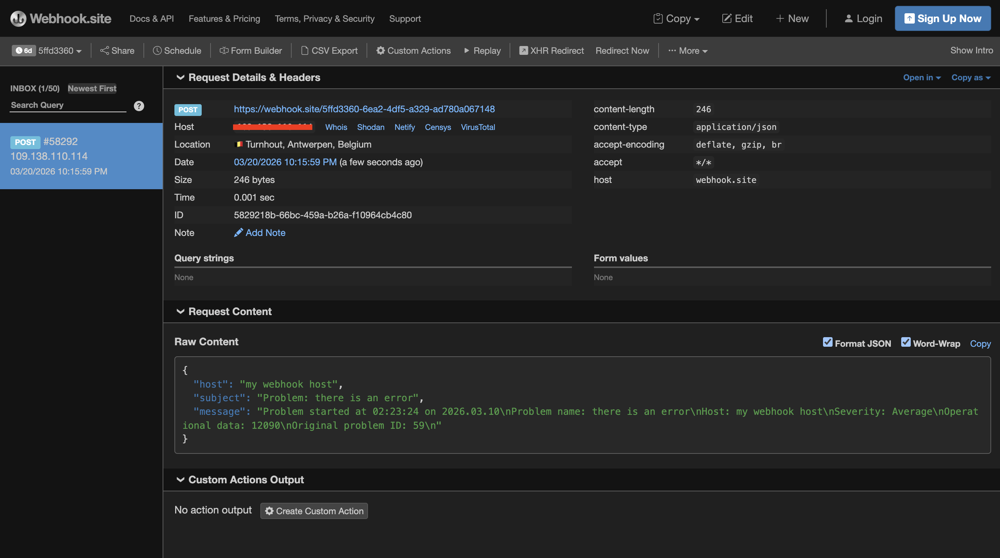

Media types
Before Zabbix can actually notify anyone about a problem, it needs to know how to reach them. That is exactly what media types are for. A media type defines the delivery channel, the mechanism Zabbix uses to send a notification. Think of it as the difference between sending a letter versus making a phone call: the message may be the same, but the channel is completely different, and each channel needs its own configuration.
In Zabbix 8.0, media types live under Alerts → Media types in the menu on the left. This is where you define all the delivery channels your installation will use, before any of them can be assigned to users or referenced in actions.
It is important to understand that a media type on its own does nothing. It is just a reusable configuration template. The full notification chain in Zabbix always involves three pieces working together:
- A media type : defines the delivery channel and its technical settings (SMTP server, webhook URL, script name, etc.).
- A user media assignment : connects a specific user to a media type, supplying that user's personal contact details (email address, phone number, Slack user ID, etc.) and optionally restricting which severities or time windows apply.
- An action : defines when to send a notification and to which users.
If any of these three pieces is missing or misconfigured, notifications will not
be delivered. Keep this triangle in mind as you read through the rest of this
chapter and the Actions chapter that follows.
The Four Media Type Categories
Zabbix 8.0 supports four kinds of media types. Each has its own configuration form, but they all share a set of common settings that we will cover first.
-
Email : Is the most commonly used type and is built directly into the
Zabbix server. No external scripts are required. Zabbix connects to an SMTP server and delivers messages. -
SMS : Sends text messages via a GSM modem physically attached to the
Zabbix server. This is a legacy option and rarely used in modern deployments, but it remains available. The sms modem is usually connected to a serial port or USB port with the help of some special software like smstools. -
Script : Lets you execute any custom script or binary on the
Zabbix serverwhen a notification needs to be sent. This is how you can integrate with almost anything. PagerDuty, a ticketing system, a proprietary API, ... as long as you can write a script that talks to it. -
Webhook : Is the modern evolution of Script. Instead of running a local script, Zabbix executes a JavaScript function internally (using the Duktape JS engine embedded in the server) that makes HTTP requests. Zabbix ships with a large collection of ready to use webhook integrations for services like Slack, Microsoft Teams, Telegram, Opsgenie, Jira, and many more. This is the preferred approach for new integrations.
Common Settings
Regardless of which type you are configuring, every media type shares the following fields at the top of its configuration form.
-
Name : is simply a descriptive label. Choose something meaningful, if you have multiple email configurations (for example, one for internal alerts and one for customer notifications), the name is the only thing distinguishing them in dropdown lists.
-
Type : selects which of the four categories above you are configuring.
-
Description : is optional free text. Use it. Documenting what the media type is for, which external service it connects to, and any non obvious configuration choices. This saves a great deal of confusion later.
-
Enabled/Disabled : toggle. A disabled media type will not deliver any notifications even if it is assigned to users and referenced in actions. This is useful when you need to temporarily suppress a channel without deleting its configuration.
-
Message templates : every media type can carry default message templates for each event type:
- Problem
- Problem recovery
- Problem update
- Service
- Service recovery
- Service update
- Disscovery
- Auto registration
- Internal problem.
- Internal problem recovery
These templates define the subject and body that Zabbix uses when no action-level
template overrides them. They support Zabbix macros (like {HOST.NAME},
{TRIGGER.NAME}, {EVENT.SEVERITY}, etc.), which are substituted at send time.
We will look at a full example template in the step-by-step section below.
-
Concurrent sessions : controls how many simultaneous alert notifications this media type is allowed to process at once. For most installations, the default (one) is fine. Webhooks to fast external APIs can sometimes benefit from a higher value. Increasing this also increases load on the Zabbix server. Also don't forget to increase in the
Zabbix serverconfig the optionStartAlertersif needed. -
Attempts and Attempt interval : if a notification fails to deliver (for example, the SMTP server is temporarily unavailable), Zabbix will retry. The Attempts field sets how many total tries it will make (minimum 1, maximum 100), and Attempt interval sets how long Zabbix waits between retries. A sensible default for email is 3 attempts with a 5-minute interval.
The Email media type is the one most Zabbix installations configure first. Zabbix acts as an SMTP client and delivers messages through your mail server.
Configuration Fields
-
SMTP server : the hostname or IP address of the mail server Zabbix should connect to. If you are using an internal relay, this is typically your organization's mail relay hostname.
-
SMTP server port : the TCP port to connect on. The most common values are 25 (plain SMTP), 465 (SMTPS — SSL/TLS from the start of the connection), and 587 (SMTP with STARTTLS).
-
SMTP helo : the HELO/EHLO hostname Zabbix presents when connecting to the SMTP server. This should be the fully qualified domain name of the
Zabbix server. -
SMTP email : the sender address that will appear in the
From:header. Make sure this address is permitted to send mail through the SMTP server you specified, otherwise you may encounter relay rejection or SPF failures. -
Connection security : controls how the SMTP connection is encrypted. Choose from None (plain text, not recommended for production), STARTTLS (upgrades an unencrypted connection to TLS after the initial handshake), or SSL/TLS (TLS from the very first byte, used with port 465).
-
SSL verify peer and SSL verify host : when using TLS, these control whether the server's certificate is validated. In a production environment, both should be enabled. Disabling them is useful only for testing with self-signed certificates and should not be left off permanently.
-
Authentication : SMTP authentication. If your mail server requires a username and password, select Normal and enter the credentials. If no authentication is needed (for example, a local relay that accepts mail from the Zabbix server by IP), leave this as None.
-
Username / Password : the SMTP credentials, visible only when Authentication is set to Normal.
Note
When using Gmail or Microsoft 365 as the outgoing mail server, standard username
/password authentication may be blocked by modern security policies. Zabbix ships
with a dedicated Automated Gmail/Office365 media type that uses OAuth2, which
is the correct approach for those services. See the Zabbix documentation for
the OAuth2 setup guide.
SMS
The SMS media type sends messages through a GSM modem connected to the Zabbix server via a serial port or USB-serial adapter.
GSM modem — the path to the serial device, for example /dev/ttyUSB0 or /dev/ttyS0.
This type has very limited configuration options because the complexity lies in the physical hardware setup. The modem must be powered, the SIM card must have credit or an active plan, and the device path must be accessible by the user running the Zabbix server process. Testing is done by observing whether test notifications actually arrive on a phone.
SMS is largely superseded by webhook integrations with modern messaging platforms, but remains useful in environments where internet access is restricted or in industrial monitoring scenarios where SMS is a hard requirement.
Script
The Script media type runs a custom script located in the AlertScriptsPath
directory on the Zabbix server. By default this is /usr/lib/zabbix/alertscripts/
on most Linux distributions, though this can be changed in the Zabbix server
configuration file (/etc/zabbix/zabbix_server.conf).
Script name — just the filename of the script, without a path. Zabbix will
look for it in AlertScriptsPath. The script must be executable by the user running
the Zabbix server.
Script parameters — a list of arguments passed to the script. Each parameter
is specified on a separate line. Parameters support Zabbix macros. A typical
setup passes three arguments: {ALERT.SENDTO} (the user's contact details from
their media assignment), {ALERT.SUBJECT}, and {ALERT.MESSAGE}.
The script receives the parameters as positional arguments: $1, $2, $3, etc.
The script's exit code matters: exit 0 means success; any non-zero exit code is
treated as a failure, and Zabbix will log the error and retry according to the
Attempts setting.
Checkout the next topic Custom Alert Scripts if you like to find out more on
how to configure this in Zabbix.
Important Security Consideration
Scripts run as the user that owns the Zabbix server process (typically
zabbix). Make sure scripts do not have world-writable permissions and that the
AlertScriptsPath directory itself is not writable by untrusted users. Never
place scripts outside of AlertScriptsPath.
Webhook
Webhooks are the most powerful and flexible media type in Zabbix 8.0. Instead of
running an external script, Zabbix executes a JavaScript function internally.
This function has access to a built-in HTTP client object (CurlHttpRequest)
and can make GET, POST, PUT, or DELETE requests to any HTTP/HTTPS endpoint.
Pre-built Integrations
Zabbix ships with dozens of ready-to-use webhook templates accessible from the Import button on the Media types list page. These cover popular services including Slack, Microsoft Teams, Telegram, PagerDuty, Opsgenie, Jira, Jira Service Management, ServiceNow, Zendesk, Pushover, Discord, Mattermost, VictorOps, and more. For most teams, the answer to "how do I send alerts to Slack?" is simply: import the Slack webhook, fill in your Slack token, and you're done.
Configuration Fields
Script: the JavaScript code that runs when Zabbix needs to send a notification.
The function receives a value object that contains all available macros. It
should return a string on success (which Zabbix logs as the result) or throw an
error on failure.
Parameters: key-value pairs that are made available inside the script via the
params object (or via the macros {$PARAM_NAME} in the script). This is how
you inject configuration like API tokens, channel names, or webhook URLs without
hardcoding them in the script itself. Parameters can include Zabbix macros such
as {ALERT.MESSAGE} or {ALERT.SENDTO}.
Timeout: the maximum time in seconds the script is allowed to run. If the script does not complete within this time, Zabbix kills it and treats it as a failure.
Process tags: If enabled, Zabbix passes event tags into the webhook script, which can be useful for routing or enriching the notification.
Include event menu entry: Adds a link to the event in the Zabbix frontend as part of the notification, useful when the target system supports clickable URLs.
Message templates: like all media types, webhooks can have default message templates per event type.
Writing a Custom Webhook Script
If no pre-built integration exists for your target service, writing your own webhook script is straightforward. Before you wire it up to a real endpoint, it is worth testing against a public HTTP inspection tool so you can see exactly what Zabbix sends. webhook.site is ideal for this: open https://webhook.site in your browser and you immediately get a unique URL that captures every request made to it, showing headers, body, and status, no account or setup required.
Use that URL during development, then swap it for your real endpoint once everything looks correct.
Here is a minimal webhook script that posts a JSON notification:
var params = JSON.parse(value);
var message = {
"host": params.host,
"subject": params.subject,
"message": params.message
};
var payload = JSON.stringify(message);
var request = new HttpRequest();
request.addHeader('Content-Type: application/json');
var response = request.post(params.endpoint_url, payload);
if (request.getStatus() !== 200) {
throw 'Unexpected HTTP status ' + request.getStatus() + ': ' + response;
}
return response;
To wire this up for testing:
- Go to Alerts → Media types and click Create media type.
- Set the Type to Webhook and paste the script above into the Script field.
- Under Parameters, add four entries:
| Name | Value |
|---|---|
| endpoint_url | (your webhook.site URL) |
| host | {HOST.NAME} |
| subject | {ALERT.SUBJECT} |
| message | {ALERT.MESSAGE} |
Parameter names are case-sensitive. A typo or capital letter will cause that field to silently disappear from the JSON output with no error message. If a field is missing from the webhook.site output, the parameter name is the first thing to check.
Click Add to save the media type.
Testing with the Test button, you can click Test on the media type form to verify
that the script parses and runs without errors. However, the Test button runs in
a restricted sandbox that does not have access to the HTTP client, so no request
will ever reach webhook.site from there. It is still useful for catching syntax
errors and verifying that your parameters are defined correctly, but it cannot
substitute for a real end-to-end test. Testing end-to-end with webhook.site, to
actually see a request land on webhook.site you need the full notification chain
in place:
Assign the media type to your user (go to Users → Users, open the user, Media tab,
click Add, select the webhook media type, enter anything in Send to since the
script does not use it, and enable all severities).
Make sure an action exists under Alerts → Actions → Trigger actions that sends
to your user. Trigger a real problem. The quickest way is to create a dummy trigger
with an expression that is immediately true, such as last(/your-host/system.uptime) > 0.
The moment that trigger fires, Zabbix runs the webhook script for real and the
request will appear in webhook.site within seconds.

7.1 webhook
Once you see the request on webhook.site and the JSON looks correct, the media type
is working. Disable or delete the dummy trigger, replace the endpoint_url parameter
value with your real endpoint, and the setup is production ready.
For server-side logging during development, the Zabbix object is available in the
script environment. Zabbix.Log(4, 'response was: ' + response) writes to the
Zabbix server log at debug level 4, which is useful for tracing what a script
is doing when a problem only appears in production and not during testing.
Note
HttpRequest is the correct object name in Zabbix 5.4 and later, including Zabbix 8.0. Older documentation and community examples often reference CurlHttpRequest, which was the name used in Zabbix 5.2 and older and no longer works. If you copy a webhook script from an external source and it throws a ReferenceError: identifier 'CurlHttpRequest' undefined error, replacing CurlHttpRequest with HttpRequest and updating the method names to lowercase (addHeader, post, getStatus) is all that is needed.
Assigning Media to Users
Defining a media type is only the first step. To actually receive notifications, each user must have the media type assigned in their profile, along with their personal contact details for that channel. Navigate to Users → Users, click on a user, go to the Media tab, and click Add.
Type selects which media type this assignment uses.
Send to is the user's contact address for this channel. What you enter here
depends entirely on the media type. For email it is the email address. For a
custom script it becomes the value of {ALERT.SENDTO}, which Zabbix passes as
the first argument $1 to the script. For a webhook it flows into the script
via whatever parameter you have mapped to {ALERT.SENDTO} — for Slack, that is
the channel name. The key point is that Zabbix itself does not interpret or
validate this field beyond storing it; the media type script or SMTP layer is
what actually uses it.
When active defines the time window during which this assignment is active,
using Zabbix's time period syntax. 1-7,00:00-24:00 means always active.
1-5,08:00-18:00 restricts to weekdays during business hours. This lets you,
for example, configure an SMS assignment that only fires outside business hours
when nobody is watching dashboards.
Use if severity is a set of checkboxes covering all six trigger severities: Not classified, Information, Warning, Average, High, and Disaster. Only problems at a checked severity will be delivered through this assignment. A typical setup gives email all severities and SMS only High and Disaster.
Status enables or disables this specific assignment without touching the media type or user account. A common use case is temporarily disabling an assignment for a user who is on leave.
A single user can carry as many media assignments as needed. Multiple assignments of the same media type are valid too. For example, two email assignments sending to different addresses, one for all severities and one restricted to Disaster that also copies a management distribution list.
Step-by-Step: Configuring an Email Media Type
Let's walk through setting up a working email media type from scratch.
Step 1 — Create a New Media Type
In the Zabbix frontend, go to Alerts → Media types and click Create media type in the top-right corner.
Set the Name to something descriptive, such as Email - Internal SMTP, and
set the Type to Email. Use the Description field to note which relay
is being used and why — this saves confusion when you have multiple email media
types or revisit the configuration months later.
Step 2 — Configure the SMTP Settings
Fill in the connection details:
- SMTP server:
mail.example.internal - SMTP server port:
587 - SMTP helo:
zabbix.example.internal(the Zabbix server's FQDN) - SMTP email:
zabbix-alerts@example.internal - Connection security:
STARTTLS - SSL verify peer: checked
- SSL verify host: checked
- Authentication:
Normal - Username:
zabbix-alerts@example.internal - Password: (your SMTP password)
Port 587 with STARTTLS is the recommended choice for modern mail servers. If your
relay requires SSL/TLS from the start of the connection, use port 465 and set
Connection security to SSL/TLS instead.
Note
This is just an example setup, not a working configuration. You need to add the correct SMTP server address etc ... .
Step 3 — Set Retry Parameters
Leave Concurrent sessions at 1 for email. Set Attempts to 3 and Attempt
interval to 5m, Zabbix will retry up to three times with a five minute gap
if the SMTP server is temporarily unavailable.
Step 4 — Configure Message Templates
Click Message templates and then Add to create a template for the Problem event type.
Subject:
Message body:
Problem started at {EVENT.TIME} on {EVENT.DATE}
Problem name: {EVENT.NAME}
Host: {HOST.NAME}
Severity: {EVENT.SEVERITY}
Operational data: {EVENT.OPDATA}
Original problem ID: {EVENT.ID}
{EVENT.URL}
Then add a second template for Problem recovery:
Subject:
Message body:
Problem resolved at {EVENT.RECOVERY.TIME} on {EVENT.RECOVERY.DATE}
Problem name: {EVENT.NAME}
Host: {HOST.NAME}
Severity: {EVENT.SEVERITY}
Original problem ID: {EVENT.ID}
{EVENT.URL}
It is also worth adding templates for Problem update and Internal problem while you are here, so all event types produce sensible messages rather than falling back to Zabbix's bare-bones defaults.
Note
A list of all macros that you can use here can be found at the following location: https://www.zabbix.com/documentation/current/en/manual/appendix/ macros/supported_by_location
Step 5 — Save and Test
Click Add to save. Then click Test, enter a real email address in the Send to field, and click Test again. Zabbix will attempt delivery immediately and show the result inline — either a confirmation or the exact SMTP error. This is the quickest way to catch misconfigured relay settings before they cause missed alerts in production.
Step 6 — Assign to a User
Go to Users → Users, open the user who should receive notifications, click the Media tab, and click Add.
- Type:
Email - Internal SMTP - Send to:
your.name@example.internal - When active:
1-7,00:00-24:00 - Use if severity: all severities checked
- Status: Enabled
Click Add then Update to save the user profile.
Step 7 — Verify in an Action
A configured media type and a user media assignment are necessary but not sufficient on their own. You also need at least one enabled Action under Alerts → Actions → Trigger actions that includes this user (or a group they belong to) as a recipient. Without a matching action, no notification will ever be triggered. Actions are covered in the next section of this chapter.
Troubleshooting Notification Delivery
When notifications are not arriving, work through the following checks in order. The first two alone resolve the majority of cases.
Check the Action log first. Go to Reports → Action log. This shows every delivery attempt Zabbix has made, its status (Sent, In progress, or Failed), and the full error message when something went wrong. Always start here — the error message usually tells you exactly what is broken.
Confirm the action exists and is enabled. The most common reason notifications never appear in the Action log at all is that no action matches the event. Go to Alerts → Actions → Trigger actions and verify that at least one enabled action covers the problem conditions and targets the right user or group.
Verify the media type is enabled. Open the media type and confirm the status is Enabled. A disabled media type produces no entries in the Action log and gives no obvious indication that something is wrong.
Verify the user's media assignment is enabled. Go to the user's profile, Media tab, and check that the assignment status is Enabled.
Check severity filters. If the media assignment is restricted to certain severities and the trigger fires at a severity that is not checked, no notification is sent.
Check time period restrictions. If When active is set to business hours and the problem occurs outside that window, no notification is sent.
Test the media type directly. Use the Test button on the media type configuration form. This exercises the delivery channel in isolation, independently of actions, triggers, and user assignments — useful for confirming that SMTP settings or webhook tokens are still valid.
Check the Zabbix server log. The server log at /var/log/zabbix/zabbix_server.log
contains detailed output from alert processing. Temporarily increasing DebugLevel
to 4 in zabbix_server.conf (and reloading the server) produces significantly
more detail and is often the fastest way to diagnose a webhook script that fails
in production but passes the Test button.
Exporting and Importing Media Types
Media type configurations can be exported to XML and imported on another Zabbix instance, which is useful for promoting configurations between environments or keeping them in version control.
To export, go to Alerts → Media types, check the box next to one or more media types, and select Export from the action menu below the list. To import, click the Import button in the top-right corner of the same page and select the XML file. If a media type with the same name already exists, Zabbix will ask whether to update it or skip it.
Note
Passwords entered directly into media type fields, such as the SMTP password,
are not included in the export. You will need to re-enter them after importing.
User macro references like {$SLACK_TOKEN} are exported normally; only the
underlying macro values are masked in the UI, and those are managed separately
under Alerts → Macros.
Best Practices
Store credentials in secret user macros. Rather than typing SMTP passwords
or API tokens directly into media type fields, create a Secret user macro under
Alerts → Macros and reference it as {$MACRO_NAME} in the media type configuration.
The value is masked in the UI, excluded from exports, and can be rotated in one
place without editing every media type that uses it.
Always define message templates. If neither the action nor the media type carries a message template for an event type, Zabbix falls back to a minimal default that omits most useful context. At minimum, define templates for Problem and Problem recovery on every media type you deploy.
Test before going live. Use the Test button to verify a new media type before attaching it to production actions. The few seconds this takes is nothing compared to discovering a broken SMTP configuration during an actual incident.
Watch for silent failures. A media type can fail consistently for days without any visible indication unless you are actively monitoring the Action log. Periodic check Reports → Action log, filter by status Failed, this is a simple habit that catches problems early.
Keep configurations in version control. Export your media type XML files and commit them alongside your other infrastructure configuration. This makes it straightforward to reproduce your notification setup on a new instance or recover from an accidental change.
Conclusion
Media types are the foundation of Zabbix's notification system. Without a properly
configured media type, no amount of trigger tuning or action configuration will
result in a notification reaching a human. The key points to carry forward are:
the media type defines the delivery channel and its technical settings; the
user media assignment connects a channel to a specific person with their contact
address, severity filter, and time window; and an action defines the conditions
under which Zabbix decides to send. All three must be in place. A gap in any one
of them and notifications will not flow.
In the next section we look at Actions in detail, where you define the logic that decides when to notify, who to notify, and what to say.
Questions
-
What are the three components that must all be in place for Zabbix to successfully deliver a notification? What happens if any one of them is missing?
-
A media type is described as a "reusable configuration template." What does that mean in practice — how does a single media type serve multiple users with different contact addresses?
-
What is the difference between the Script and Webhook media types? In what situation would you choose one over the other?
-
You need a user to receive SMS alerts only for High and Disaster severities, and only outside of business hours. Which two fields in the user's media assignment control this behaviour?